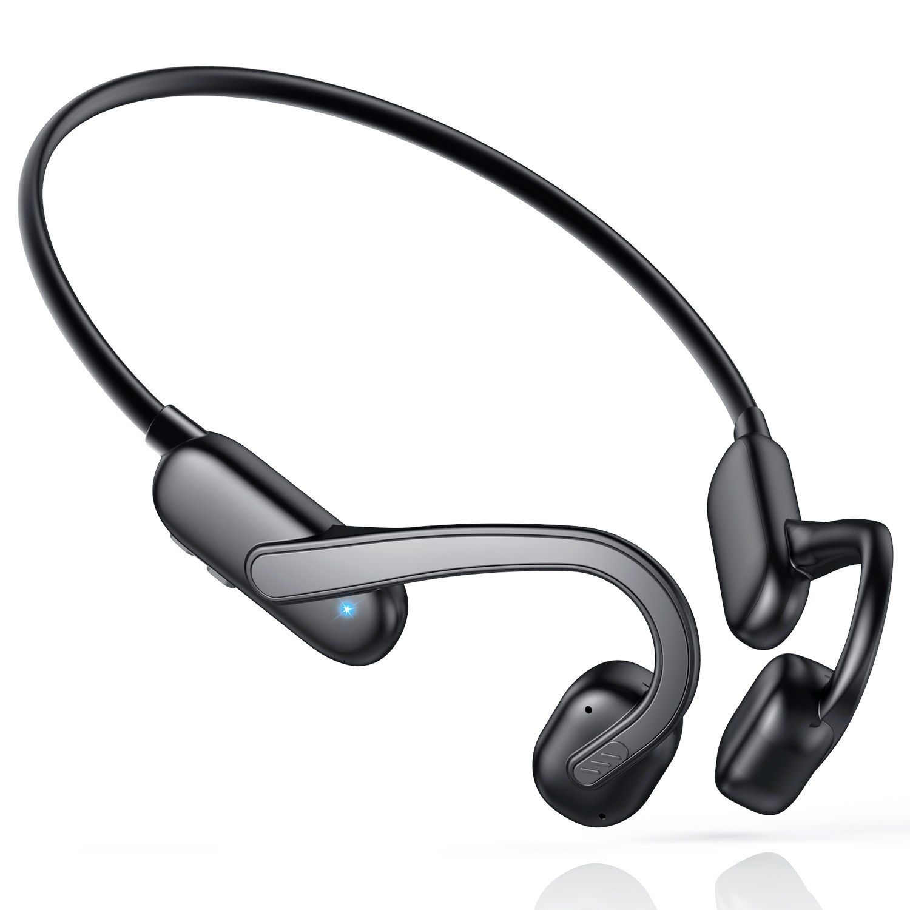
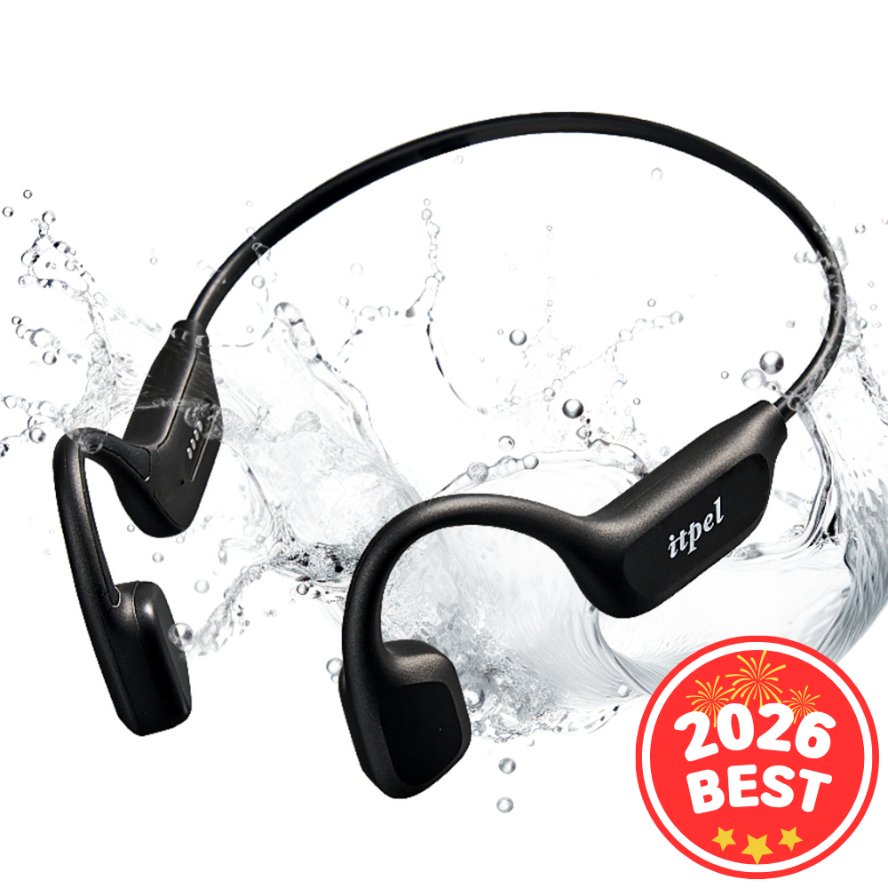
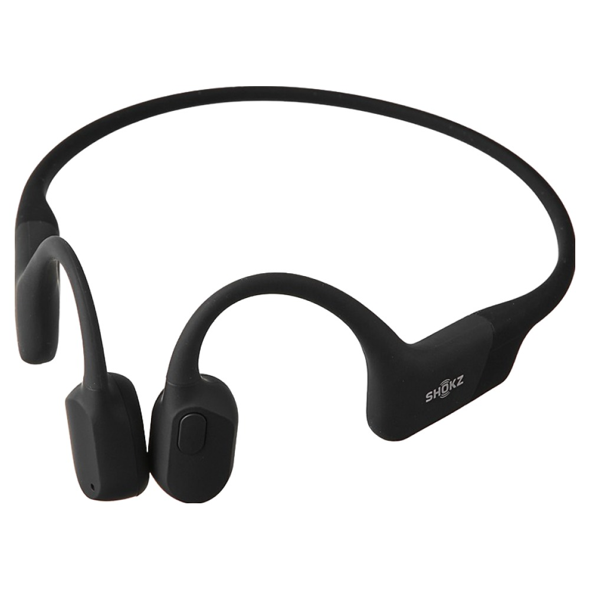

홈 › 제품리뷰 › 디지털/IT
골전도 이어폰, 가성비냐 샥즈냐
작성: 생활서식 모음 · 2026-08-23
파트너스 활동의 일환으로 일정액의 수수료를 지급받습니다
🛒 오늘의 쿠팡 특가 보러가기 →
골전도 이어폰, 귀 막지 않고 운동하며 들으려는데 뭘 살까요?
핵심은 "착용감과 방수, 음질" 3대 를
"저렴한 입문" "방수 잇펠" "정통 샥즈"용도별 정답 까지 담았으니
📋 목차
골전도 이어폰, 가성비냐 샥즈냐 — 결론 먼저 스펙 비교표: 한눈에 보기 골전도 이어폰 고를 때 봐야 할 3가지 가성비냐 정통이냐, 뭘 사야 할까? 자주 묻는 질문 (FAQ) 결론: 한 줄 요약
골전도 이어폰, 가성비냐 샥즈냐 — 결론 먼저
골전도 이어폰은 "착용감과 방수(운동 강도)" 로 갈려요.가성비 , 땀·물까지면 방수 잇펠 , 완성도·정통이면 샥즈 오픈런 이 무난합니다.
1 가성비·입문 (가성비 초이스)
가성비

가성비 입문
1. KONLI 골전도 무선 블루투스 이어폰
방수·브랜드는 아니어도
추천 대상
골전도 이어폰을 저렴하게 처음 써보려는 분 귀를 막지 않고 주변 소리를 들으려는 분 가벼운 산책·실내 운동용을 원하는 분 장점
1만원대로 부담 없이 골전도 입문 귀를 막지 않아 주변 소리를 들으며 사용 오픈이어라 장시간 착용도 답답함이 덜함 단점
이 제품은 가성비·입문용 입니다. 땀·물까지면 2번 방수, 완성도·정통이면 3번 샥즈로 가세요. "입문"이면 가성비 좋아요.
한줄 리뷰
"골전도를 저렴하게 경험"이면 KONLI가 무난합니다. 주변 소리도 들려요. 방수·음질이면 2·3번을 보세요.
주요 스펙
제품: KONLI 골전도 무선 블루투스 이어폰 방식: 골전도·오픈이어 용도: 입문 배송: 로켓배송 가격: 약 19,900원 (변동 가능) ※ 실제 스펙·가격과 차이가 있을 수 있습니다
2 방수·실속 (베스트 초이스)
베스트

방수·운동
2. 잇펠 골전도 블루투스 이어폰 (X8 MAX, IPX8 방수)
IPX8 방수로 땀·물까지
추천 대상
땀·비·물까지 걱정 없이 운동하려는 분 러닝·헬스·수영 등 활동적으로 쓰려는 분 가성비 이상의 방수·성능을 원하는 분 장점
IPX8 방수라 땀·물에도 안심하고 사용 골전도 오픈이어라 야외 운동 시 안전 러닝·스포츠에 맞춘 착용·성능 단점
저렴한 입문이면 1번, 완성도·정통이면 3번 샥즈입니다. 2번은 "IPX8 방수+운동" 의 실속 구간 — 러닝·활동에 가장 무난합니다.
한줄 리뷰
"땀·물 걱정 없이 운동하며"면 잇펠이 좋습니다. 방수가 든든해요. 완성도·정통이면 3번을 보세요.
주요 스펙
제품: 잇펠 골전도 블루투스 이어폰 X8 MAX 방수: IPX8 방식: 골전도·오픈이어 배송: 로켓배송 가격: 약 100,990원 (변동 가능) ※ 실제 스펙·가격과 차이가 있을 수 있습니다
3 완성도·정통 (프리미엄)
프리미엄

정통 샥즈
3. 샥즈 오픈런 골전도 블루투스 이어폰 (S803)
골전도 대표 브랜드 샥즈의
추천 대상
골전도 대표 브랜드로 제대로 쓰려는 분 착용감·음질 완성도를 중시하는 분 오래 믿고 쓸 이어폰을 원하는 분 장점
샥즈라 골전도 착용감·음질이 안정적 오픈런 특유의 편안한 착용감 완성도·내구가 좋아 오래 만족 단점
저렴한 입문이면 1번, 방수·운동이면 2번 잇펠이 합리적입니다. 3번은 샥즈 완성도(착용감·음질) 를 원하는 분에게 값어치가 있습니다.
한줄 리뷰
"골전도 대표 브랜드로 착용감·음질까지"면 샥즈가 좋습니다. 완성도가 좋아요. 저렴·방수면 1·2번이 합리적입니다.
주요 스펙
제품: 샥즈 오픈런 S803 방식: 골전도·오픈이어 특징: 착용감·음질 배송: 로켓배송 가격: 약 170,050원 (변동 가능) ※ 실제 스펙·가격과 차이가 있을 수 있습니다
스펙 비교표: 한눈에 보기
가격·풍량·무게 중 본인에게 중요한 기준부터 보세요. "최고" 표시는 3제품 중 객관적 1위 값입니다.
← 좌우로 스크롤 →
골전도 이어폰 고를 때 봐야 할 3가지
착용감·방수만 챙겨도 후회가 적습니다.
1) 착용감 — 흘러내림
귀에 거는 오픈이어라 운동 중 흔들림·흘러내림 확인 무게가 가벼울수록 장시간 착용이 편함 안경 착용자는 걸림 여부도 참고 2) 방수 — 운동 강도
땀만이면 생활방수, 비·수영까지면 IPX7~8 러닝·헬스는 방수 등급이 높을수록 안심 수영용은 방수+저장 재생 기능 확인 3) 음질·통화 — 사용
골전도는 귀를 막지 않아 주변 소리를 듣는 게 장점 저음(베이스)은 일반 이어폰보다 약할 수 있음 통화 마이크 품질도 참고 가성비냐 정통이냐, 뭘 사야 할까?
운동 강도와 완성도 요구만 정하면 답이 나옵니다.
가성비·입문: 1번 KONLI → 저렴하게방수·운동: 2번 잇펠 → 땀·물완성도·정통: 3번 샥즈 → 착용감·음질자주 묻는 질문 (FAQ)
Q1. 골전도 이어폰은 음질이 안 좋다던데요? 일반 이어폰보다 저음이 약할 수 있지만 용도가 다릅니다. 골전도는 귀를 막지 않고 뼈로 소리를 전달해 주변 소리를 들으며 쓸 수 있는 것이 장점이라, 음질보다 안전·개방감을 위한 제품입니다. 저음·차음은 커널형 이어폰이 낫지만, 운동·야외에서 주변을 살피며 듣기엔 골전도가 유리합니다.
Q2. 골전도 이어폰이 운동에 좋은 이유는? 귀를 막지 않아 안전하고 땀에 강합니다. 러닝·자전거 등 야외 운동 시 자동차·주변 소리를 들을 수 있어 안전하고, 귀에 꽂지 않아 장시간에도 답답함이 덜하며, 방수 제품은 땀·비에도 강합니다. 그래서 운동·야외 활동용으로 인기가 많습니다.
Q3. 골전도 이어폰도 방수가 되나요? 제품에 따라 다르며 등급을 확인하세요. 생활방수(땀)만 되는 제품부터 IPX7~8(물에 잠겨도 되는) 제품까지 다양합니다. 땀 위주면 생활방수로 충분하고, 비·수영까지면 높은 방수 등급이 필요합니다. 수영용은 방수와 함께 내장 메모리 재생 지원 여부도 확인하세요.
Q4. 소리가 밖으로 새서 시끄럽지 않나요? 음량이 크면 다소 새어나올 수 있습니다. 골전도는 구조상 조용한 곳에서 큰 음량으로 들으면 주변에 소리가 새어나갈 수 있습니다. 도서관 등 조용한 곳에선 음량을 낮추는 것이 좋고, 야외·운동 환경에선 크게 문제되지 않습니다. 제품마다 누음 정도가 다르니 참고하세요.
Q5. 안경을 써도 착용이 괜찮나요? 대부분 함께 착용 가능하지만 걸림을 확인하세요. 골전도는 귀에 거는 형태라 안경다리와 겹칠 수 있으나, 대부분 함께 쓰는 데 큰 무리는 없습니다. 안경테가 두껍거나 착용감이 민감하면 매장·후기로 걸림 여부를 확인하는 것이 좋습니다. 가벼운 제품일수록 부담이 적습니다.
결론: 한 줄 요약
1) KONLI 골전도 — 약 19,900원 / 가성비·입문. 저렴+오픈이어.2) 잇펠 X8 MAX — 약 100,990원 / 방수·운동. IPX8.3) 샥즈 오픈런 — 약 170,050원 / 완성도·정통. 착용감·음질.이 포스팅은 쿠팡 파트너스 활동의 일환으로, 이에 따른 일정액의 수수료를 제공받습니다.